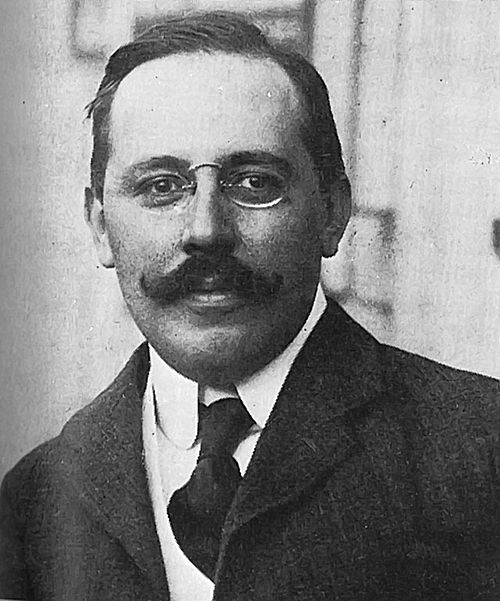

요제프 호프만
요제프 호프만(독일어: Josef Hoffmann, 1870년 12월 15일 ~ 1956년 5월 7일)은 오스트리아의 건축가이다.

요제프 호프만의 일생
- 1.오스트리아-헝가리 제국 모라바(현재의 체코) 브르트니체(Brtnice) 출신이다.
- 1895년 빈 응용 미술 대학에서 오토 바그너로부터 건축을 배웠다
- 2.1897년에는 요제프 마리아 올브리히 등과 함께 빈 분리파를 결성했다.
- 3.1903년 빈 분리파를 탈퇴하고 윌리엄 모리스의 영향을 받은 빈 공방을 결성했다.
- 4.빈 공방은 1932년 해체될 때까지 운영되었다.
- 5.1905년부터 1911년까지 벨기에 브뤼셀에 건설된 스토클레 궁전의 설계를 맡았다.